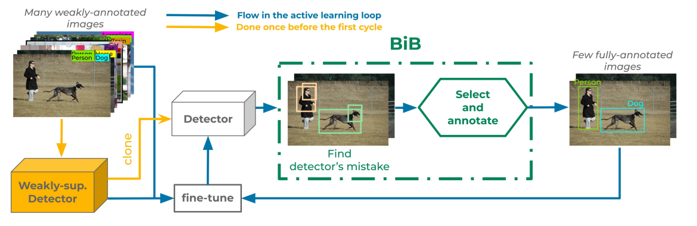

Object detectors trained with weak annotations are affordable alternatives to fully-supervised counterparts. However, there is still a significant performance gap between them. We propose to narrow this gap by fine-tuning a base pre-trained weakly-supervised detector with a few fully-annotated samples automatically selected from the training set using ``box-in-box'' (BiB), a novel active learning strategy designed specifically to address the well-documented failure modes of weakly-supervised detectors. Experiments on the VOC07 and COCO benchmarks show that BiB outperforms other active learning techniques and significantly improves the base weakly-supervised detector's performance with only a few fully-annotated images per class. BiB reaches 97% of the performance of fully-supervised Fast RCNN with only 10% of fully-annotated images on VOC07. On COCO, using on average 10 fully-annotated images per class, or equivalently 1% of the training set, BiB also reduces the performance gap (in AP) between the weakly-supervised detector and the fully-supervised Fast RCNN by over 70%, showing a good trade-off between performance and data efficiency.
@inproceedings{vo2022active,
title={Active Learning Strategies for Weakly-Supervised Object Detection},
author={Vo, Huy V and Sim{\'e}oni, Oriane and Gidaris, Spyros and Bursuc, Andrei and P{\'e}rez, Patrick and Ponce, Jean},
booktitle={ECCV},
year={2022}
}